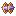
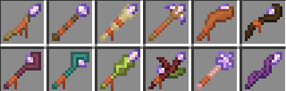
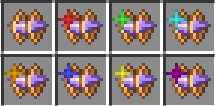
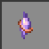
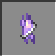
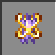
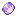
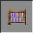

Toán học
Ma pháp
Nguồn: Curseforge Modrinth
Nguồn: Curseforge Modrinth
| Giới thiệu | Vật phẩm | Patterns | Spells | Ví dụ |

Vật phẩm ma pháp
Các loại gậy phép cơ bản (Chức năng như nhau)

Focus khi chưa và đã lưu dữ liệu

Cypher: Pháp khí cơ bản nhất, không thể sạc lại Media.
Trinket: Phiên bản cao cấp hơn Cypher, có thể sạc lại Media. Tuy nhiên, lượng Media lưu trữ có giới hạn.
Artifact: Pháp khí cao cấp nhất, vừa có thể sạc lại, vừa có thể trực tiếp sử dụng Amethyst trong túi đồ của thuật sư.
Vật phẩm hỗ trợ

Nguyễn Đình Khánh - 12C
Gmail: khanh2008hihi@gmail.com